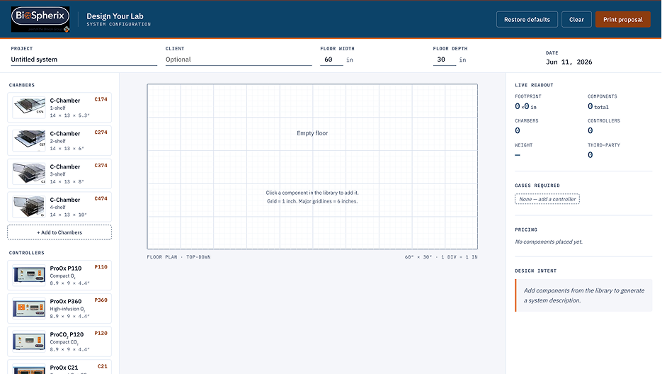
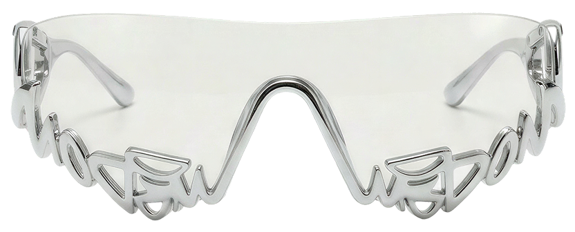

Hi! I’m Niharika Jain
 AI Workflows
UX/UI
Physical Experiences
Brand Systems
AI Workflows
UX/UI
Physical Experiences
Brand Systems
Available for work · Class of 2026
Part designer, part storyteller & part systems thinker
A multidisciplinary UX/UI designer creating digital products, brand systems, and physical experiences that make complicated things feel clear, calm, and a little more delightful.
Selected Work
Pili
A calm connection system that helps older adults, families, and caregivers stay connected.

Design Your Lab
An AI-assisted layout planning tool that helps engineers translate client requirements into clearer lab system layouts.

SCAD x Wisdom ATL Eyewear
A product and brand experience collaboration including eyewear concepts, packaging systems, visual merchandising, and a retail buyer pitch.

SCADpro x FIFA World Cup 2026 Atlanta
A UX research and service design collaboration focused on improving the visitor and fan experience across Atlanta’s FIFA World Cup 2026 touchpoints.

Behind the Build
This portfolio is also a record of how it was made: the prompts, revisions, AI direction logs, resistance notes, and design choices behind the final site.
AI Direction Log
How I used AI as a design partner, not a shortcut.
Records of Resistance
Moments where I rejected generic outputs and redirected the system.
System Architecture
How the site structure, project pages, and visual language came together.
This site was built as a living design system, using AI for iteration while keeping art direction, structure, and final decisions human-led.
What I design
I work across screens, systems, brands, and physical touch points, usually where things are a little messy and need to become easier to understand.
AI Workflows
Prompting, prototyping, coded experiments, process documentation
Digital Products
UX/UI, flows, wireframes, prototypes, interface systems
Brand Systems
Visual identity, typography, campaigns, storytelling
Physical Experiences
Packaging, retail moments, environmental graphics, product touchpoints
Let’s make something clear, useful, and a little unexpected.
I’m currently looking for UX/UI, product design, brand experience, and multidisciplinary design roles where research, storytelling, and systems thinking matter.